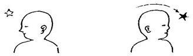
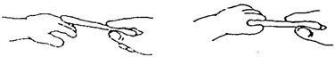
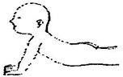
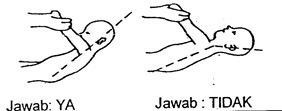

Kuesioner Praskrining untuk Bayi 6 bulan
- Pada waktu bayi telentang, apakah ia dapat mengikuti gerakan anda dengan menggerakkan kepala sepenuhnya dari satu sisi ke sisi yang lain?

- Dapatkah bayi mempertahankan posisi kepala dalam keadaan tegak clan stabil? Jawab TIDAK bila kepala bayi cenderung jatuh ke kanan/kiri atau ke dadanya
- Sentuhkan pensil di punggung tangan atau ujung jari bayi. (jangan meletakkan di atas telapak tangan bayi). Apakah bayi dapat menggenggam pensil itu selama beberapa detik?

- Ketika bayi telungkup di alas datar, apakah ia dapat mengangkat dada dengan kedua lengannya sebagai penyangga seperti padA gambar ?

- Pernahkah bayi mengeluarkan suara gembira bernada tinggi atau memekik tetapi bukan menangis?
- Pernahkah bayi berbalik paling sedikit dua kali, dari telentang ke telungkup atau sebaliknya?
- Pernahkah anda melihat bayi tersenyurn ketika melihat mainan yang lucu, gambar atau binatang peliharaan pada saat ia bermain sendiri?
- Dapatkah bayi mengarahkan matanya pada benda kecil sebesar kacang, kismis atau uang logam? Jawab TIDAK jika ia tidak dapat mengarahkan matanya.
- Dapatkah bayi meraih mainan yang diletakkan agak jauh namun masih berada dalam jangkauan tangannya?
- Pada posisi bayi telentang, pegang kedua tangannya lalu tarik perlahan-lahan ke posisi clucluk. Dapatkah bayi mempertahankan lehernya secara kaku seperti gambar di sebelah kiri ? Jawab TIDAK bila kepala bayi jatuh kembali seperti gambar sebelah kanan.
